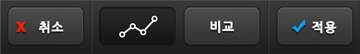

커브(Curves)
 커브(Curves)– 고급 기능 : 커브(Curves)를 활용하면 섬세한 사진 보정이 가능합니다.
커브(Curves)– 고급 기능 : 커브(Curves)를 활용하면 섬세한 사진 보정이 가능합니다.


①커브 라인(Line) 위를 탭(Tap)하여 ②조절 포인트(Control Point)를 추가할 수 있습니다.
조절 포인트를 드래그(Drag)하면 커브의 모양을 조절할 수 있습니다.
조절 포인트를 다른 포인트의 위치 너머(가로 축 기준)로 움직이면 포인트를 없앨 수 있습니다.
커브(Curves)의 우측 상단은 사진의 밝은 부분을, 좌측 하단은 사진의 어두운 부분을 나타냅니다.
예를 들어 위 사진과 같이 S자 모양으로 커브를 만들면 밝은 부분은 더욱 밝게, 어두운 부분은 더욱 어둡게 변하여 대비(Contrast)가 강한 사진이 됩니다.
③적색(Red), 녹색(Green), 청색(Blue) 탭을 선택하면 해당 색상의 Curve를 별도로 조절하여 다양한 컬러 톤(Color tone)을 자유자재로 만들 수 있습니다.

④흑백(B/W) 버튼을 누르면 흑백 상태에서 Curve를 적용하게 되어 다양한 모노톤(Mono-tone)의 느낌을 만들 수 있습니다.

⑤리셋 버튼을 눌러 언제든지 커브 모양을 초기화할 수 있으며, ⑥도움말 버튼을 눌러 즉석에서 사용법을 다시 확인할 수 있습니다.